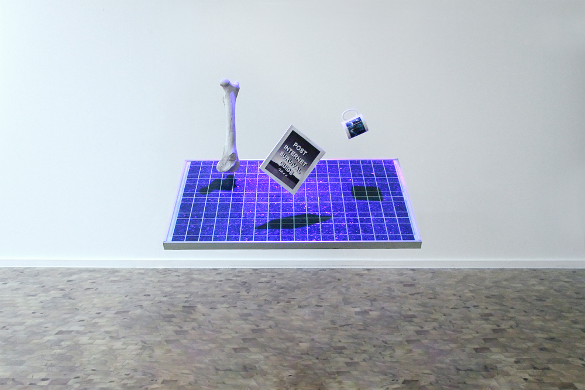
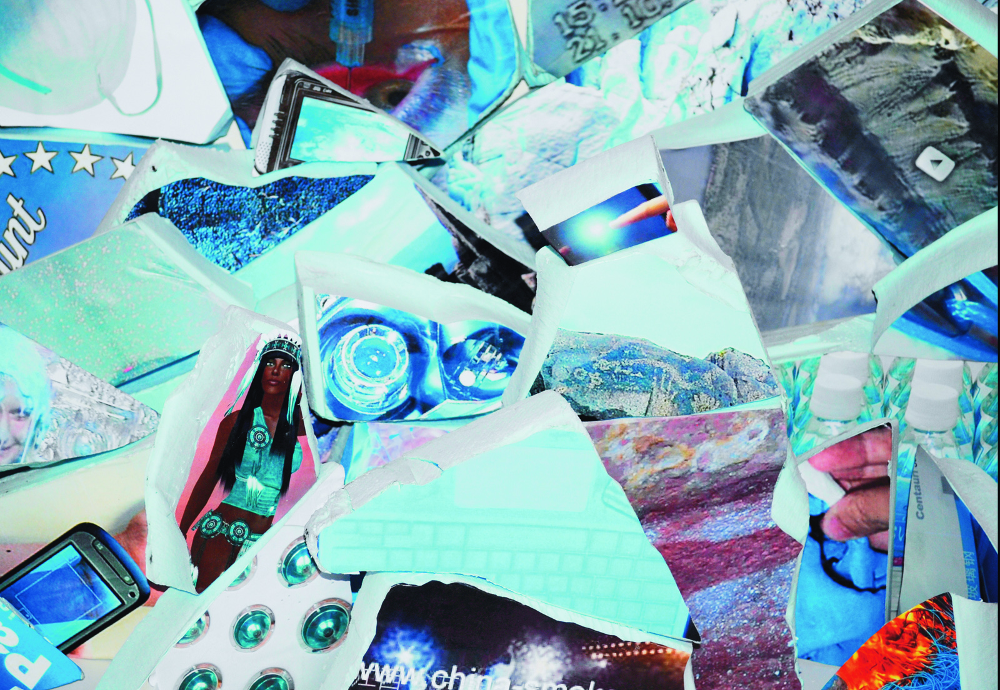

Title of Article: My ID is Post-Internet
Reviewed by: Julee Nhek
Abstract
Identifying art is one way to interpret its meaning and intentions, but what happens if Post-Internet art becomes too complex to understand when your viewer is somehow connected to an artist’s work. Is it possible to lose your artist’s touch or an accidental collaboration waiting to reform against traditional art? Post-Internet engages the viewers participating and willing to become part of the art without being directly interesting in their work. Sure images and descriptions would suffice, but I want to dig deeper into the meaning.
Kewords
- Internet
- Art
- Viwer Interaction
- 21st Art Movement
- New Aesthetic
- Contradictory Modernism Art
- Art after the Internet
Article Body
I. Introduction
The internet is another art medium that we don’t talk enough, mainly because it is not the standardized traditional form of internet art, rather it is the viewers’ participation making it exist. Post-Internet engages the viewers’ participation and the ability to become part of the art without being directly interesting in their work. I want to go over Post-Internet, “the art after the internet” as the rebel of art and how it is often mistaken as Net Art, “the original web 1.0”. Post-Internet art began in the 21st century (2000-2015) which has reflect the current internet trend. This is a visual style that is directly represents the internet, rather within the internet network. Post-Internet art creates a whole new aesthetics as we venture through the spreading of digital technology because it opposes the ideas of the current internet. Since I mentioned my title as “My ID is Post-Internet”, I do not know the actual identity of the art. What criteria make it a Post-Internet? Where does the word come from or how did it originate? What sets it apart from Net Art. How it is displayed in the gallery? Does it have to have internet elements as the materials? Was my identity borrowed to become good or bad? These questions will help me solve this theory or leave them unanswered. Therefore, I will go over the history of trends, the audience’s role behind the artwork, and their role in the art realm.
II. Body Paragraph 1
Post-Internet art one of characteristics is an Original-Copy Relationship. As HiSour stated in their article, “Post-internet redefines the original-copy relationship. It is primarily based on reworking what is available on the Internet.” (HiSoUR). That is why I wanted to tackle the problem of whether this movement was intentionally created because of the indirect relationship with the viewers. This has create an online virality caused a form of viewership and a mode of display. Another factor is the ability to be versatile when presenting the artwork. Post-Internet art can be displayed in online and offline medium formats.
C. How is it portrayed in current trends?
Styles in common
Usage of window browsers
III. Body Paragraph 2
A. Aesthetic Era and Media Narratives
The rise of Y2K (may need to explain what is Y2K)
B. Compare old and current artists’ works
How the post-internet then compares within 2022
C. Inspiration from which aspects of the internet
IV. Body Paragraph 3
A. Finding inspired artworks from Pinterest and Tumblr
Mention Artists
Describe the works
Highlight recent works
Most famous Post-Internet artists
V. Body Paragraph 4
A. Prosumption: focusing more on “Found” more than “Created”
Prosumption is…
B. Is it a parody or a rebellious statement about the internet?
C. Explaining Authorship
VI. Body Paragraph 5
The audience accidentally collaborated with the artists because of their strong influence on how the artwork was made. According to Nina Blumberg, “Sean Fader, Pontes’s projects rely on viewer interaction and engagement for their success. However, the artist places a strong emphasis on studying the social and psychological motivations of her audience through her work.”(Blumberg). Audience’s role in art is a passive participation with the artist in making the art a success. Without any likes or engagement from the audience, then there is no reason for displaying art in the first place. The audience brings art attention, therefore visual representations of Post-Internet art wouldn’t exist without the viewership.
VII. Body Paragraph 6
A. What is Post-Internet identity and role in the art realm?
B. Theories behind the term and concept of mainstream media
C. How to identify a Post-Internet art?
Looking for clues and common patterns that represent Post-Internet art
VIII. Conclusion
In conclusion, Post-Internet art is the rebel of internet art because it opposes the ideas of the current internet. When you see Post-Internet…Viewers digitally and socially interacted in internet culture and therefore participated in helping the artist’s creative process. Either way, some Post-Internet artists have encountered a digital experience and expressed it based on intuition and an aesthetic feeling.
references:
Nina Carol Blumberg, Social Medium: Virtual vs. Actual Realities in Post-Internet Art An Exhibition Catalogue Essay, 2015,
https://www.proquest.com/docview/1808507069?pq-origsite=primo
Mary Anne Francis, Indifferent Forms: The Cultural Politics of Medium Online, or the Formal Remit of Diversity and Difference, 2015,
https://web.p.ebscohost.com/ehost/pdfviewer/pdfviewer?vid=0&sid=44bd1fcb-2744-4537-a415-a1d2df24c553%40redis
HiSoUR, Post-Internet, 2020,
https://www.hisour.com/post-internet-7896/
Patina Lee, What Is Post Internet Art? | Widewalls, 2016,
www.widewalls.ch/magazine/post-internet-art
Michael Connor, What’s Postinternet Got to Do with Net Art? Rhizome, 2013,
rhizome.org/editorial/2013/nov/01/postinternet/
Ian Wallace, What Is Post-Internet Art? Understanding the Revolutionary New Art Movement. Artspace,, 2014,
www.artspace.com/magazine/interviews_features/trend_report/post_internet_art-52138
Paddy Johnson, This Is Why Post-Internet Art Doesn’t Look Hi-Tech. Garage, 2018,
https://garage.vice.com/en_us/article/9kzx9p/why-post-internet-art-doesnt-look-hi-tech
Cody Rooney, Postinternet Art: New Media Narratives and the New Aesthetic. Glossi Mag, 2017,
https://glossimag.com/postinternet-art-new-media-narratives-new-aesthetic/
Domenico Quaranta, Presentism and Post-Internet. DAM MUSEUM, 2020,
dam.org/museum/essays_ui/essays/presentism-and-post-internet/
Additional Images
Katja Novitskova
POST INTERNET SURVIVAL GUIDE, 2010

Molly Soda
Sorry if I’m getting too romantic, date unknown

Kari Altmann
Hhellblauu, 2008